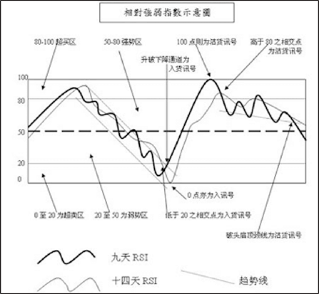
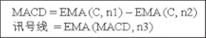
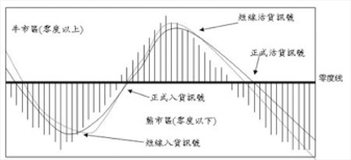

相對強弱指數通常簡稱為RSI， 目的是要分析目前是市勢是屬於強勢抑弱勢， 更重要的處就是此市勢何時終結， 其所預測的往往是中期走勢，如從浪底持貨至浪頂，獲利則十分豐厚。亦即是預測轉角市何時出現。命中率相當之高，因而最為廣泛所採用。基本理論是以某一時段之收市價來作為數據，從中選取出這個時段內上升的日子之總和以及下跌日子之總和，再尋求其比例。便可得知目前走勢是屬於強勢抑弱勢，而當相對強弱指數與市價出背馳之時，即示意轉勢在即。設計此指數之時，是首先將市場動量情況釐定在0至100之間，要明白RSI，先要明白RS，先列出其計算方法如下：
The relative strength index is usually referred to as RSI. The purpose is to analyze whether the current market is strong or weak. What is more important is when the when the market situation is over. RSI often forecasts trend in the medium term. For example, if the goods are held from the bottom to the top, there will be abundant profit. That is to predict when the turnaround will appear. The hit rate is quite high and is therefore the most widely used. The basic theory is to use the closing price of a certain period of time as the data, from which the sum of the days rising during this period and the sum of the falling days are selected, and then the proportion is sought. It can be known that the current trend is a strong or weak, and when the relative strength index and the market price are divergent, it indicates that the trend is imminent. When we design this index, the market momentum situation is first determined to be between 0 and 100. To understand RSI, we must first understand RS. First, the calculation method is as follows:
AU的計算方法:
若當日之收市價C1較上日收市價C為高，則兩日收市價之間的升幅為C1-C，然後將九日內報升日子錄得的升幅相加，然後再將總數除以九日，便得到九日內平均的上升幅度。
AU calculation method::
If the closing price of the day C1 is higher than the closing price of the previous day, the increase between the two-day closing price is C1-C, and then the increases recorded in the nine-day report are added, and then the total is divided by nine. it will get an average increase in nine days.
AD的計算方法:
若當日之收市價C1較上日收市價C為低，則兩日收市價之間的跌幅C-C1，然後將九日內報跌的日子錄的跌幅相加，然後再將總數除以九日，便可計算到九日內平下跌幅度。因此RS是在期內大市上升幅度及下降幅度的對比，如上升幅度，大市勢越強；如下跌幅度大，則示意市勢越弱。將其代入0至100之間的動量時，可演變成以下公式：
The calculation method of AD:
C-If the closing price of the day C1 is lower than the closing price of the previous day, the difference between the two-day closing price is C-C1, and then the decline recorded in the day of the fall within 9 days is added, and then the total is divided by 9. It can be calculated to fall within 9 days. Therefore, RS is a comparison of the increase and decline of the market during the period. If the increase is large, the market is stronger. If the decline is large, the market is weaker. Substituting it into momentum between 0 and 100 can evolve into the following formula:
茲以一九九九年二月一日某商品之收市價為例，列出計算其九天之RSI之方法：
For the example of the closing price of a commodity on February 1, 1999, the method of calculating the nine-day RSI is listed:
將上述數字代入公式中如下：
Substituting the above numbers into the formula as follows:
是日之九天相對強弱指數則為40.56。
要計算相對強弱指數，最基本是要定出一個時段來，可以用一時段來計算，亦可以用複式時段來計算，目前是要提高其命中率。通常用的都是九日和十四日這兩個時段。皆為神奇數字里有八和十三。取九及十四即是轉勢之時，冀望可以更準確地測出轉角市。九和十四天的指數各有其優劣點。九天指數波動較大，但示意的為較短期的走勢，所以其力量亦較少；而十四天指數時間較長，力量較大，但信號並不明顯。所以現時一般人採用的，均是複式指數，是將兩種指數混合來看。
所謂複式指數，即是九天與十四天的相對強弱指數，找出其極端之交會點，其應用方法如下：
在動量零與一百之間，先找出一中位數即五十點，以此點來釐定大市之強勢或弱勢。當九天及十四天指數同時在五十點之上時，表示大市屬於強勢，而當兩者處於五十點之下時，表示大市屬於弱勢，因而可釐定買賣策略。但當兩者均高於八十點時，表示己進入超買區，隨時會有回吐之可能；而兩者均進低於二十點時，表示己進入超賣區，隨時會有反彈之可能。 以八十點和二十點來釐定超買或超賣，一般來說需要等待較長之時期，但易捉到浪頂或浪底，亦會錯過很多中小浪的機會。因此亦有人建議採取三十點和七十點作為超買及超區之釐定，由於其變動大，經常出現入貨或沽貨信號，所以命中率不及前者高。因此，此處仍是建議以二十點和八十點作為基數，要捉摸其中短期變化，尚有很多較有效之方法。
The nine-day relative strength index is 40.56..56。
To calculate the relative strength index, the most basic is to set a period. You can use not only a period to calculate but also the compound period to calculate, which is to increase its hit rate. The nine days and fourteen days Usually used are the two periods of the nine days and fourteen days. There are eight and thirteen in the magic numbers and they are on the turning point so we hope we can be more accurate to predict the turnaround. The nine- and fourteen-day indexes each have their own advantages and disadvantages. The nine-day index fluctuated greatly, but it was a shorter-term trend, so its power was also less; while the four-day index was longer and more powerful, but the signal was not obvious. Therefore, what the average person uses now is a double index,
which is a mixture of the two indices.
The so-called double index is the relative strength index of nine days and fourteen days and to find out the extreme intersection points. The application methods are as follows:
Between zero and one hundred, first find a median of 50 points to determine the strength or weakness of the market. When the nine-day and four-day index are above 50 points, it means that the market is strong, and when the two are below 50, it means that the market is weak and at the time we can determine the trading strategy. However, when both are higher than 80 points, it means that they have entered the overbought area and there is a possibility of retreat at any time. When both are below 20 points, they have entered the oversold area and will rebound at any time. When the overbought or oversold is regulated based on 80 and 20 points, it is generally necessary to wait for a longer period of time, but it is easy to catch the top or the bottom, and then you will miss many opportunities for small and medium waves. Therefore, it has also been suggested that 30 points and 70 points should be taken as the over-buy and over-zone determination. Due to the large changes, there are often signs of incoming goods or stocks, so the hit rate is lower than the former. Therefore, it is still recommended to use 20 points and 80 points as the base. To grasp the short-term changes, there are still many more effective methods.
在兩線均進入超買或超賣區之時，不就一定可以反手，還要等待這兩線相交，才算是正式的入貨或沽貨信號。而尚未相交之時，如九天線己到達零點或一百點，而十四天線順序己低於二十點或高於八十點亦可。到出現入貨信號時，先行買入，到兩線均超越五十點之時，則可沽出一半，到正式沽貨信號出現之時， 則要全部清貨離場。 而當中RSI的走勢， 亦可按照其它圖表形態畫出趨勢線或各種圖表型態來；然後再按該型態之信號進行買賣，即如破頭肩頂底線則沽貨，破頭肩底頂線則入貨；升破下降信道則入貨，跌破上升通道則沽貨等等。
相對強弱指數原本是要每天計算，每天劃的；但由於現在計算機信息發達，因此不但可顯示出真實時間的指數，以便即市買賣，而且還可以與其它技術線一起應用，以提高其命中率。
The nine-day relative strength index is 40.56..56。
To calculate the relative strength index, the most basic is to set a period. You can use not only a period to calculate but also the compound period to calculate, which is to increase its hit rate. The nine days and fourteen days Usually used are the two periods of the nine days and fourteen days. There are eight and thirteen in the magic numbers and they are on the turning point so we hope we can be more accurate to predict the turnaround. The nine- and fourteen-day indexes each have their own advantages and disadvantages. The nine-day index fluctuated greatly, but it was a shorter-term trend, so its power was also less; while the four-day index was longer and more powerful, but the signal was not obvious. Therefore, what the average person uses now is a double index, which is a mixture of the two indices.
The so-called double index is the relative strength index of nine days and fourteen days and to find out the extreme intersection points. The application methods are as follows:
Between zero and one hundred, first find a median of 50 points to determine the strength or weakness of the market. When the nine-day and four-day index are above 50 points, it means that the market is strong, and when the two are below 50, it means that the market is weak and at the time we can determine the trading strategy. However, when both are higher than 80 points, it means that they have entered the overbought area and there is a possibility of retreat at any time. When both are below 20 points, they have entered the oversold area and will rebound at any time. When the overbought or oversold is regulated based on 80 and 20 points, it is generally necessary to wait for a longer period of time, but it is easy to catch the top or the bottom, and then you will miss many opportunities for small and medium waves. Therefore, it has also been suggested that 30 points and 70 points should be taken as the over-buy and over-zone determination. Due to the large changes, there are often signs of incoming goods or stocks, so the hit rate is lower than the former. Therefore, it is still recommended to use 20 points and 80 points as the base. To grasp the short-term changes, there are still many more effective methods.
由於只使用一種技術線來預測大市，往往會出現所謂圖表陷井，於是類似的技術線會應運而生。通常隨機指數都會配合相對強弱指數而運用，因為兩者之應用方法頗為類似。但隨機指數則更為細微，因為有快版與慢版之分。通常快慢是用以預測短期走勢，而慢版則用以預測較長期之走勢。
隨機指數是建基在收市會與整段上升或下降時段的關係。理論上，在上升市中收市會應接近整個時段的高位，而下跌市則應接近整個時段之低位。而計算之時間越長則命中率越高，但為了要等待訊之出現，可能亦會錯過一些短期之買賣信號。因此，實際應用起來，均是快版與慢版一起混合應用的。儘管慢版隨機指數是屬於改良型。原則上是以收市價偏高或偏低來預測未來走勢。基本計算公式是以最後的收市價減去時段內的最低收市價，再除以時段內最高的收市價減去時段內的最低收市價。茲列快版與慢隨機指數的出公式如下：
Since only one technology line is used to predict the market, there is often a so-called chart trap, so a similar technology line will emerge. Usually the stochastic index will be used in conjunction with the relative strength index, because the application methods of the two are quite similar. But the random index is subtler, because there are quick and slow versions. Usually the speed is used to predict short-term movements, while the slow version is used to predict longer-term movements.
The stochastic index is the relationship between the establishment of the market and the rise or fall of the whole period. In theory, the market close in the upswing should be close to the high of the entire period, while the down market should be close to the low of the entire period. The longer the calculation time, the higher the hit rate, but in order to wait for the news to appear, we may also miss some short-term trading signals. Therefore, in practice, both the fast version and the slow version are mixed and applied together. Although the slow version of the random index is a modified type, in principle, the future trend is predicted by the closing price. The basic calculation formula is that the final closing price minus the lowest closing price in the period, divided by the price that the highest closing price in the period minus the lowest closing price in the period. The formula for the fast and the slow random index is as follows:
本質上，獲取沽貨信號與入貨信號與強弱指數無異。均是相交於八十點之上為沽貨信號，而相交於二十點以下則為入貨信號。至於在其它水平相交仍可視為反走勢之信號，由於出現機會較多，所以較易出現走勢陷井。至於兩線同時高於八十點或低於二十點之時，只可作預備入貨或沽貨信號，不妨多等數天便會相交，總比入了市之後才等待好得多了。相要拿其實質走勢於相對強弱指數相比，其出貨信號及入貨信號出現的次數比較多；因此無需像相對強弱指數那樣等待數個月才可找到一次入市的信號。
但當信號出現次數少之時，其命中率自然會提高，同時所指示的走勢維持時間則會較長；反之，信號出現多之時，所指示的走勢維持的時間會較短，但會較實際，因為可指示出中期的入市或離市信號。而在實戰環境當中，中線的信號是最受歡迎的，因為除了本身的中線客之外，無論是長線客或短線客都隨時會轉變形勢追隨中線信號。況且，當快版與慢版隨機指數一起配合運用之時，其命中率亦是相當之高的。 至於其強勢及弱勢的分野同樣是五十點，可參照前面強弱指數的示意圖，理論上的應用方法是一致的，但實際上，唯一的分別是在圖表形態上。因為其信號出現的次數比較多，其走勢經常往返於八十點及二十點之間，所以大多數為近乎直線的走勢，很難造出如頭肩形或上升以及下降信道的形態來；所以在隨機指數以後述的MACD的圖形中，是無需理會這些形態的。率亦是相當之高的。
In essence, obtaining the stocking signal and the incoming signal are not different from the strength index. All of them intersect at 80 points for the goods signal, while the intersections below 20 points are the arrival signals. As for the intersection of other levels, it can still be regarded as a counter-trend signal. Because there are more opportunities, it is more likely to have a trend trap. As for the two lines being higher than 80 points or lower than 20 points at the same time, they can only be used as advanced buying or pick-up signals. It may take a few more days to intersect, but it is better to wait after entering the market. Compared with the relative strength index, the shipment signal and the arrival signal appear more frequently; therefore, it is not necessary to wait for several months to find a signal to enter the market as the relative strength index.
However, when the number of occurrences of the signal is small, the hit rate will naturally increase, and the indicated trend will last longer. On the contrary, when the signal appears more, the indicated trend will be shorter, but it will be shorter. Actually, because it can indicate the mid-term market entry or exit signal. In the actual trading environment, the mid-line signal is the most popular, because in addition to its own mid-line passengers, both long-term passengers and short-term customers will change the situation to follow the mid-line signal. Moreover, when the fast version and the slow version of the random index are used together, the hit rate is also quite high.
As for the strength and weakness of the field is also fifty points, can refer to the previous strength and weakness index diagram, the theoretical application method is consistent, but in fact, the only difference is in the form of the chart. Because the number of occurrences of the signal is relatively large, the trend often travels between 80
離合線全名為“移動平均線匯聚背馳指標”。與前述的相對強弱指數及隨機指數完全以另一種形態來表示的，其應用方法亦有甚大差異，所以三者若能配合應用，其命中率自然會大大提高。平均線實際上為一種雞肋線，其應用程度最為廣泛，但要最受批評的。主要由於其難度低及出信號時往往慢於大市，於是便有很多改良型的技術線如離合線等。計自方法是以當天的收市價減去上日的“指數移動平均線”（EMA），然後再將其差乘以一個固定的常數百分比，再加回昨日指數移動平均線。
The full name of the clutch line is “the moving average convergence divergence indicator”. Compared with the above-mentioned relative strength index and random index, which are completely expressed in another form, there are also many differences in the application methods. Therefore, if the three can be used together, the hit rate will naturally increase greatly. The average line is actually a chicken rib line, which is the most widely used, but it is most critical. Mainly due to its low difficulty and often slower than the market, there are many improved technology lines such as clutch lines. The method is based on the closing price of the day minus the “Exponential Moving Average” (EMA) of the previous day, and then multiplying the difference by a fixed constant percentage and adding back to the yesterday's exponential moving average.
一個離合線的矩陣圖，其結構是在圖中央先定出一指針，作為零度線。信號線則為實線，再加上兩條弧形的離合線。信號線在零度以下時均是全部向下的，代表熊市形態，所以此時應以沽貨為主；而當信號線超越零度線時均是全部向上的，代表牛市形態，此時需以入貨為主。而當兩弧線與信號線在零度以下重迭時，即三線相交之處為短期入貨信號，或稱為預備入貨信號。而當兩弧線升越零度線之時，則為正式入貨訊號或稱為長期入貨信號。反之，當兩弧線與信號線在零度之上成三線重迭之時，則為預備沽貨或短期沽貨信號。當弧形線跌破零度線之時，則為正式沽貨或長期沽貨信號。矩陣圖的形態茲列出如下：
A matrix diagram of a clutch line, its structure is a pointer in the center of the figure as a zero-degree line. The signal line is a solid line, plus two curved clutch lines. When the signal line is below zero, it is all downwards, which represents the bear market form. Therefore, it should be dominated by stocks; when the signal line exceeds the zero line, it is all upwards, representing the bull market form and at this time the goods should be bought in. When the two arcs overlap with the signal line below zero, that is, the intersection of the three lines is a short-term incoming signal, or a preliminary incoming signal. When the two arcs rise above the zero-degree line, it is a formal incoming signal or a long-term incoming signal. Conversely, when the two arcs and the signal line overlap in three lines above zero, the signal is prepared for short-term or short-term stocking. When the curved line falls below the zero-degree line, it is the official stocking or long-term stocking signal. The shape of the matrix diagram is listed below:
基於市場走勢不會成絕對的直線或直角，而包含一定弧度，因此引用大自然的拋物弧度來應用在市場上。大自然上的所謂拋物線定義是由某一點所引伸出來的平面曲線，而該距離的點除以該距離的線是等於一。由此定律即可求出固定的參數。應用之時即是以某一日的高位減去時段開始時的轉向點，即成翌日之轉向點。再以翌日之轉向點乘以固定參數，以預測目前走勢何時完結，有如物體被拋落地面時其行程即告終止。
拋物線基本上是一種時間與價位的系統。而此系統之最大特點是有足夠時間去讓市場反應。當一個走勢開始之時，它不會馬上轉勢，但當肯定此走勢己形成後，反應才會出現，因而可避免走勢陷井；到此走勢繼續進行之時，其點數則會跳得極為快速。所以這些點數不單止顯示出價位因素，亦可顯示出時間因素。當價位稍為回落之時，拋物線是不會回頭的，直至大市掉頭為止。所以應用拋物線之原則其為簡單，只要拋物線向上，則持好倉；拋物線向下則持淡倉即可。而拋物點之距離亦是價位波動強弱的指示。
The market trend will not become an absolute straight or right angle, but contains a certain degree of curvature, so the parabolic arc of nature is used to apply to the market. The so-called parabola definition in nature is a plane curve drawn from a point, and the point of the distance divided by the distance is equal to one. From this law, a fixed parameter can be obtained. At the time of application, the turning point at the beginning of the period is subtracted from the high point of the day, that is, the turning point of the day. Multiply the turning point of the next day by a fixed parameter to predict when the current trend will end, as if the object was terminated when the object was thrown off the ground.
Parabola is basically a system of time and price. The biggest feature of this system is that there is enough time for the market to react. When a trend begins, it will not turn immediately, but when it is certain that the trend has taken shape, the reaction will appear, so that the trend trap can be avoided. When the trend continues, the points will jump extremely fast. So these points not only show the bidding factor, but also show the time factor. When the price is slightly down, the parabola will not go back until the market turns around. So the principle of applying parabola is simple--as long as the parabola is up, it holds a good position; if the parabola is down, it can hold a short position. The distance of the parabolic point is also an indication of the strength of the price fluctuation.
以下舉一實例說明，當價位上升之時，開始時每天的拋物線是緩緩上升的，然後再急速上升，到最後之時其上升幅度是每天相等的，即變為只有價位因素而沒有時間因素了。以圖表來顯示，若於第四天開始計算，第十天即失去時間因素。當第四日價位是50.00計算第五天的SAR則如下：
The following example shows that when the price rises, the parabola of the day starts to rise slowly, and then rises sharply. In the end, the increase is equal every day, with only the price factor left and without time factor. In the chart, if the calculation starts on the fourth day, the time factor is lost on the tenth day. When the fourth day price is 50.00, the SAR for the fifth day is calculated as follows: